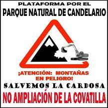

|
|
|
 |
 La
ampliación "de facto"
La
ampliación "de facto" |
Entrar
a analizar la ampliación que se pretende realizar
de la estación de esquí "La Covatilla"
no es tarea fácil, porque lejos de ser el análisis
de un proyecto aún pendiente de aprobación
(como seria de esperar, ya que no ha concluido el expediente
de Evaluación de Impacto Ambiental EIA-06-5-03),
es un proyecto que sin haber obtenido la Declaración
de Impacto Ambiental (DIA) que la ley exige, ha
llevado a cabo algunas de las ampliaciones
que el denominado "anteproyecto para acondicionamiento
de la estación de esquí", o "Plan
Director", o "Master Plan" contempla. |
La
prueba de esta afirmación es que en el "Master
Plan", cuando se describe la situación actual
de las pistas, se hace referencia a 17. Recordemos que
la primera DIA establecía para el "Centro
Turístico" las siguientes pistas: "Pista
de esquí alpino y pista de entrenamiento para
esquí de fondo y de travesía, superficies
que se acondicionarán sin que sea necesario el
desbroce de la vegetación existente".
Resumiendo una ampliación de 15 pistas
sin que entremedias haya existido EIA como
estipula el artículo 9.3 del DECRETO
Legislativo 1/2000, de 18 de mayo, por el que se
aprueba el Texto Refundido de la Ley de Evaluación
de Impacto Ambiental y Auditorías Ambientales
de Castilla y León: "Cuando
se trate de proyectos de ampliación o
modificación de actividades o instalaciones
existentes, la evaluación de impacto
ambiental será ordinaria o simplificada
según que dichas actividades estén incluidas
en los Anexos I o II, respectivamente".
Y lo del desbroce es un claro incumplimiento de las
"Las medidas preventivas,
correctoras y/o compensatorias" de
la preceptiva DIA.
Para no aburrir, se pueden ver
los incumplimientos a estas medidas preventivas en un
dossier realizado por "Ecologistas en acción"
(Ver
dossier)
|
Recordar,
en este sentido, que la ley arriba citada establece
como falta grave o muy grave en su
artículo 27.b: "El
incumplimiento del condicionado ambiental de
las Declaraciones de Impacto Ambiental en supuestos
de Evaluación Ordinaria de impacto ambiental".
Ustedes juzgarán
|
Pero
no sólo eso, desde que presentaron el "Master
Plan", han realizado alguna ampliación más,
mientras éste estaba sujeto a Evaluación.
Para ser mas concretos las pistas de "La
Muchachina" y la del "Regato del Oso"
cuya ejecución estaba programada en la Fase 1
del Plan (ver
noticia). Asimismo se inauguraba
en abril del 2006 el Bar Terraza de la cota
2.250, también incluido en el "proyecto
de acondicionamiento", mientras GECOBESA acusaba
de mentirosos a todos aquellos que decían que
se estaban realizando obras de ampliación.
(ver noticia 16/04/2006 en La
Gaceta). |
Tanto
la administración regional a través del
Servicio Territorial de Medio Ambiente de Castilla y
León, en respuesta a algunas denuncias tramitadas
a través de los organismos competentes, como
la empresa Gestora, responden a estas acusaciones, unos
diciendo que aprueban ampliaciones y obras en virtud
del art. 4 de la primera DIA y otros diciendo que tienen
los permisos emitidos por ese servicio territorial.
Recordemos lo que dice el art. 4.de
la RESOLUCION de 10 de diciembre de
1998, de la Consejería de Medio Ambiente y Ordenación
del Territorio, por la que se hace pública la
Declaración de Impacto Ambiental sobre el Proyecto
de Construcción de un Centro Turístico
denominado «Sierra de Béjar», promovido
por el Ayuntamiento de Béjar, en el término
municipal de La Hoya (Salamanca): "Cualquier
variación en los parámetros y definición
de las actuaciones proyectadas que pudiera producirse
con posterioridad a esta Declaración de Impacto
Ambiental deberá contar con el informe favorable
del Servicio Territorial de Medio Ambiente y Ordenación
del Territorio de Salamanca". |
Lo
malo de estas resoluciones es que no definen exhaustivamente
los márgenes de actuación otorgados al
Servicio Territorial, lo cual es utilizado para dos
cosas, 1) incumplir las medidas preventivas,
correctoras y compensatorias que establece preceptivamente
la DIA, dejándola sin sentido porque se vulneran
tanto el fin último que tienen dichas Declaraciones,
como el laborioso y garantista procedimiento para su
aprobación, y 2) incumplir leyes
con mayor rango. "Cualquier variación de
parámetros.", tiene un límite
claro , que es el que establece el DL
1/2000, que como hemos visto dicta procedimiento
de EIA para las ampliaciones de proyectos sujetos
al Anexo I. Resumiendo, el Servicio Territorial
no debe (poder ya vemos que si) autorizar
actuaciones que supongan ampliaciones sin iniciar procedimiento
de EIA. El Fraude de ley se define como la
situación en la cual para evitar la aplicación
de una norma jurídica que no favorece o no interesa
(a una persona, empresa o administración) se
ampara en otra. Ustedes juzgarán si con este
artículo de una Resolución, no
se esta incumpliendo un Decreto Legislativo,
transgrediendo de paso el "principio de
jerarquía normativa" que dice:
que "carecerán
de validez las disposiciones que contradigan otra de
rango superior", que aplicándolo
a la jurisdicción administrativa, que es lo que
nos ocupa, se concreta en: "Las
resoluciones administrativas de carácter particular
no podrán vulnerar lo establecido en una disposición
de carácter general, aunque aquellas tengan igual
o superior rango a éstas" |
Es
mas, el Decreto al que nos referimos dice en su art.
11, el tipo de exclusiones a esta norma general:
"La presente Ley no será de aplicación
en los proyectos de simple reposición
o reparación relativos a actividades ya existentes,
salvo cuando se realicen en Áreas de Sensibilidad
Ecológica y estén contempladas como tales
en los Anexos I o II" .
Dudamos mucho que que las continuas obras realizadas
desde su inauguración puedan entrar en la excepción
a la que se refiere el artículo.
|
Concluir
este apartado, destacando que el "Master Plan"
tiene como objetivos no declarados, dar un baño
de legalidad a las ampliaciones realizadas antes de
su presentación, aprobando una DIA con actuaciones
ya ejecutadas, así como a las obras que se estaban
ejecutando mientras el proyecto estaba (y aun está)
sometido a procedimiento de EIA. Si tenemos en cuenta
lo que dice el artículo 27.a señalando
como falta grave o muy grave:"La
iniciación de actividades sometidas a trámite
de Evaluación Ordinaria de impacto ambiental
sin la pertinente Declaración de Impacto Ambiental",
sólo podemos deducir que tanto el
Servicio Territorial de Salamanca como la Consejería
de Medio Ambiente son los principales responsables de
esta situación, dando "bula" a promotores
y empresa gestora para que hagan en la Sierra lo que
quieran, aunque para ello estas instituciones encargadas
de velar por el Medio Ambiente, incumplan las funciones
de vigilancia ambiental y alta inspección que
la Ley les otorga.
|
Los
impactos futuros |
Los
impactos perpetrados de hecho en el entorno de "La
Covatilla" son irreversibles y para constatarlo
no hay mas que darse una vuelta rodeando las instalaciones.
Sin pretender ser exhaustivos (para ampliar la información
pueden ver los documentos enlazados en la página
"Las Amenazas")
queremos destacar algunos de los impactos más
importantes de la ampliación que se pretende
realizar. |
Una
de las ampliaciones mas severas dentro de los terrenos
ya impactados, es la construcción de dos telesillas
el "TSD4 el Cerrojo" y otro de mayo capacidad
el "TSD6 Canchal Negro". Ambas instalaciones
alcanzan la línea de cumbres, al mismo borde
del Parque Regional de Gredos que a su vez es LIC y
ZEPA y no se entiende que permaneciendo las mismas condiciones
ambientales, la Junta cambie ahora de criterio cuando
por Prevención ambiental dicto en la primera
DIA: "a) Al objeto de
evitar el acceso masivo e incontrolado
de deportistas a la cumbre y a zonas protegidas
y sensibles del Parque Regional de la Sierra de Gredos,
el telesilla proyectado deberá finalizar, como
máximo a la cota 2.250 m.s.n.m. y no a la 2.364
m.s.n.m inicialmente prevista. |
En
el caso de pretender aprovechar para la práctica
del esquí los 114 metros de desnivel restantes,
podrá instalarse desde la citada cota hasta la
cumbre un telesquí o telearrastre de bastón". |
Si
las zonas siguen estando protegidas y siguen siendo
sensibles, es incomprensible que ahora se permita ese
acceso masivo no con uno sino con dos telesillas. Pero
la ampliación más impactante tanto medio
ambientalmente como por sus consecuencias futuras en
cuanto a la Red Natura 2000, es la que invade la ZEPA
y LIC de Candelario. |
|
La
invasión de la Red Natura 2000 |
A
pesar de que personas sin rigor nos tachen de mentirosos,
no podemos compartir la afirmación que "Gecobesa
Informa" lanzó en su número especial
para la Feria de Muestras, donde decía que "Tampoco
es cierto que las actuaciones realizadas en la sierra
afecten a zonas pertenecientes a la Red Natura 2000",
cuando tanto en el plano que repartían como
en el detalle de las pistas de su reverso, aparecen
tres pistas "naturales" (Valdesancho, La Cardosa
y El Calvitero) que invaden el término municipal
de Candelario, limite del LIC y la ZEPA, como se puede
ver en el la misma web de la Junta. |
La
estación actual ocupa una zona alomada entre
dos cubetas de origen glaciar de extraordinario
valor paisajístico y ambiental. El
proyecto de ampliación invade por completo
la cabecera de una de ellas, con un impacto
irreversible originado, sobre todo, por las nuevas
líneas de remontes mecánicos e infraestructuras
de pistas y evacuación. Este es sin
duda el impacto más negativo de la ampliación,
el que aumenta la invasión en el LIC y ZEPA
de Candelario, con las obras proyectadas hacia el
paraje de "La Cardosa".
Para mas detalle ponemos unos párrafos de nuestras
alegaciones:
|
En
la zona de la Cardosa del término municipal
de Candelario y futuro espacio natural, se tiene propuesta
la siguiente actuación : tres clases de pistas
(9 en total)(pistas que no requieren movimiento de
tierras, pistas que requieren actuación puntual
y pistas que requieren movimiento de tierras), un
camino de servicio de 4 mts. de ancho. A los 2100
mts. de altitud un remonte (TSF4 Candelario) de 508
mts. de longitud con capacidad de 1800 esquiadores
por hora, y a los 2350 mts. de altitud otro remonte
de 399 mts. de longitud con una capacidad de 600 esquiadores
por hora.
|
La
zona del término municipal de Candelario donde
se pretende AMPLIAR la estación de esquí
Sierra de Béjar, es la parte conocida como
“La cardosa” ubicada en el glaciar denominado
“Arroyo del Oso” tal y como la propia
Junta de Castilla y León lo tiene catalogado
: (altitud 2.330mts., tipo escalonado, tipo de glaciar
según el valle, es de circo, comenzando las
morrenas principales a 1800mts. de altitud convergente
de 1.600mts. y otras morrenas a 2.120 mts. en una
longitud de 2,5 Kms.
|
Las
condiciones ambientales que presenta el espacio natural
de Candelario por su variedad orográfica y
edafológica explica la variedad florística
y el gran valor de estas especies, por lo que el espacio
vital de estas zonas no se pueden fraccionar pues
estos hábitat y concretamente las turberas
( que por si existe duda, son medios encharcados
en condiciones ácidas y anaerobias en las que
la descomposición de materia orgánica
es muy lenta donde habitan especies adaptadas
a esta condiciones como el briofito sphagnum
y la carnívora drosera rotundifolia.
Siendo comunidades muy sensibles donde se dan unas
condiciones ecológicas, adaptaciones vegetales
y faunísticas muy particulares, ubicándose
en las partes altas donde se mantiene la nieve la
mayor parte del año Siendo la mayor amenaza
la modificación en la hidromofología
de la zona, como es el caso de las pistas
de esquí lo que alteraría de modo irreversible
las condiciones ecológicas del hábitat.
Por lo que estos espacios tienen un interés
ecológico y científico muy alto)
Igualmente, los roquedos son imprescindibles para
el desarrollo de la flora y fauna , pues si desapareciesen
desaparecerían las especies que se desarrollan
y habitan en ellos. En éstos roquedos aparece
la vegetación de fisuras de cuya valoración
de protección tiene un interés alto,
siendo un tipo de vegetación que se encuentra
por encima de los 1700 mts. de altitud estando muy
representado en todos los circos glaciares, y como
amenaza de este hábitat es la realización
de infraestructuras como son las estaciones invernales.
|
Así
mismo, los cursos de agua, son hábitat
con unas condiciones de humedad y temperatura muy
concreta que permiten la aparición de especies
megafórbicas propias de zonas umbrías
de altitud.
|
Como
puntos de interés geológico son de destacar
las morrenas de todos los glaciares, su morfología,
y sus depósitos morrenaicos, con un alto interés
científico, geomorfológico e hidromorfológico
|
Faunísticamente
todo el término municipal de Candelario (futuro
espacio Natural) es especialmente valioso ya que posee
numerosas especies de fauna con interés de
conservación pues existen catalogadas 46 especies
en peligro y amenazadas, y 54 especies de interés
comunitario incluidas en el anexo I y II de la Directiva
de aves y hábitats (Directiva 92/43/CEE y Directiva
79/409/ CEE ya citadas en el Libro Rojo de los Vertebrados
Españoles. Teniéndose que velar por
la conservación de los biotopos y hábitats
más destacables por su interés faunístico.
|
La
importancia geológica, ambiental y paisajística
de esta zona es incuestionable como demuestran los
párrafos anteriores y el mismo informe que
elaboró la Junta para declarar la zona LIC
así lo expresa. En nuestra Sierra solo hay
4 hoyas glaciares del tipo de "La Cardosa",
devastar un 25% de ese tipo de conjuntos geomorfológicos,
es un decisión mas que cuestionable. Hemos
visto en situ el destrozo que suponen las pistas que
necesitan movimientos de tierras, y como las consecuencias
de tales obras no se circunscriben a la zona roturada
y de taludes, sino que la tierra suelta y las piedras,
acaban mucho más abajo anegando charcas con
depósitos sólidos. Las pistas con "actuaciones
puntuales" son un bonito eufemismo para intentar
dar una imagen de proyectos menos agresivos con el
entorno, pero que en la realidad son de un impacto
importante. En definitiva, 9 pistas, un telesilla,
un remonte... con una gran capacidad para que el impacto
humano sobre la zona sea excesivo, además de
las intervenciones necesarias para poder realizar
las obras en esta zona que forma parte de la Red Natura
2000 es hipotecar la posibilidad de un desarrollo
auténticamente sostenible, cuando ahora que
no somos región objetivo 1 de la UE, las ayudas
mas importantes vendrán para proyectos de desarrollo
compatibles con la conservación del medio ambiente.
La Ampliación hacia Red Natura 2000, pone en
peligro que formemos parte de dicha red, y el progreso
de actividades, tanto tradicionales como novedosas,
que incidan en el mayor numero de población
y sectores económicos además del turístico
que también se verá potenciado en un
perfil sostenible y "verde".
|
El
impacto de la estación actual (a la vista esta),
no es moderado y mucho menos su ampliación. Utilizar
adjetivos como "moderado", "sostenible"
o "compatible" sólo pretende manipular
a la opinión pública, y dejar sin sentido
las palabras. Que sean valientes, que digan que el destrozo
merece la pena, (aunque los números reales, no
los propagandísticos, no dicen eso), pero que
no nos tomen por idiotas. El único esquí
sostenible es el que no toca la vegetación, no
levanta taludes para "corregir" la inclinación
natural de las laderas y cuyas instalaciones y servicios
sean desmontables. Nada de eso se cumple. |
|
Mapas |
|
|
|
|
Mapa
LIC de la Junta |
Mapa
ZEPA de la Junta |
Plano
del Master Plan |
Zonas
RN2000 invadidas |
|
|
|
|